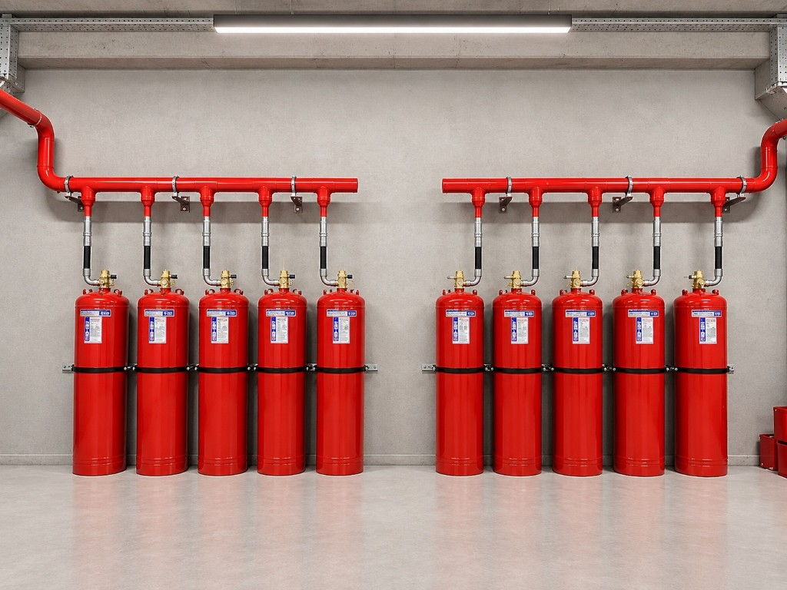

NOVEC 1230
Gazlı Yangın Söndürme Sistemleri
Hassas alanlar için maksimum koruma, minimum etki.
Novec 1230 adıyla yaygın olarak bilinen FK-5-1-12, çevre dostu yapısı, hızlı söndürme performansı ve yüksek güvenlik payı ile kritik hacimler için ideal yangın söndürme çözümüdür.

NOVEC 1230 Nedir?
NOVEC 1230 (FK-5-1-12), ozon tabakasına zarar veren Halon 1301'e alternatif olarak geliştirilen, temel yapısında karbon bulunduran temiz bir yangın söndürücü gazdır. Yangın anında ortamdaki ısıyı hızla absorbe ederek zincirleme reaksiyonları keser ve yangını kısa sürede kontrol altına alır.
Ozon tabakasına zarar vermemesi, düşük küresel ısınma potansiyeli (GWP: 1) ve solunabilir yapısı sayesinde, hassas ve kritik alanlarda güvenle kullanılabilir.
Nasıl Çalışır?
NOVEC 1230, yangın anında ortamdaki ısıyı absorbe ederek yangının devamını sağlayan zincirleme reaksiyonları keser. Oksijen seviyesine müdahale etmeden çalışır ve 10 saniyeden kısa bir sürede ortama yayılır.
Neden NOVEC 1230?
10 saniyeden kısa sürede ortama yayılır.
Kullanım sonrası temizlik gerektirmez.
Solunabilir yapısı sayesinde insanlar için güvenlidir.
Ozon tabakasına zarar vermez, GWP değeri 1'dir.
Az yer kaplar, kolayca konumlandırılabilir.
Sistem Seçenekleri ve Kurulum
NOVEC 1230 gazlı yangın söndürme sistemleri, ihtiyaca göre tek silindirli veya çok silindirli olarak tasarlanabilir. Hem merkezi hem de modüler sistem seçenekleri mevcuttur.
Oda Sızdırmazlık Testi
Tüm gazlı sistemlerde, söndürme konsantrasyonunun muhafaza edilebilmesi için odaların sızdırmaz olması gerekmektedir.
Detaylı BilgiFenix Mühendislik Süreci
Her Novec 1230 projesi, TS EN 15004 ve NFPA 2001 normlarına uygun hidrolik simülasyon ve mühendislik hesaplarıyla projelendirilir.
Korunacak mahalin net hacmi, yükseltilmiş taban ve asma tavan boşlukları ölçülerek yangın risk sınıfı incelenir.
TS EN 15004 ve NFPA 2001 formüllerine göre standart tasarım konsantrasyonu ve gereken net gaz miktarı belirlenir.
Hidrolik hesaplama simülasyonu ile boru çapları, basınç kayıpları ve nozul yerleşimleri planlanır.
Sistem sızdırmazlık ve fonksiyon kontrollerinin ardından devreye alma ve test raporu hazırlanır.
Novec 1230 Hangi Mahaller İçin İdealdir?
Yüksek değerli ekipmanların ve personelin bir arada bulunduğu kritik mahaller için en uygun yangın koruma çözümüdür.
Sunucu kabinleri, kesintisiz veri iletimi ve donanım güvenliği için temiz gaz çözümü.
Sektör Detayları →Kurumsal şirketlerin bilgi işlem altyapılarında kritik donanımları korur.
Mahal Detayları →Kesintisiz güç kaynakları ve batarya mahallerinde ark kaynaklı yangınları önler.
Mahal Detayları →Novec 1230 Hakkında Merak Edilenler
Novec 1230 sistemleri ile ilgili en sık sorulan teknik sorular ve mühendislik yanıtları.
Novec 1230 adıyla yaygın olarak bilinen FK-5-1-12, oda sıcaklığında sıvı halde depolanan ve azotla basınçlandırılan temiz bir yangın söndürme ajanıdır. Boşalma anında nozullardan gaz fazına geçerek alevdeki termal enerjiyi hızla absorbe eder ve yangını kısa sürede kontrol altına alır.
Her iki sistem de temiz ajan kategorisindedir; ancak FK-5-1-12'nin küresel ısınma potansiyeli GWP=1 iken, FM200'ün GWP değeri 3220'dir. FK-5-1-12 atmosferde yaklaşık 5 günde doğal olarak dağılırken FM200 yaklaşık 33 yıl kalır. Her iki gaz da standartlara uygun olarak insanlı ve insansız mahallerde projelendirilir.
Evet. FK-5-1-12 temiz ajanlar arasında geniş güvenlik marjına sahip söndürücülerden biridir. Standart tasarım konsantrasyonu (%4.5 – %5.9) NOAEL (%10) sınırının altında kaldığı için insanların bulunduğu ortamlarda uluslararası yangın standartlarına uygun olarak güvenle kullanılabilir.
Elektriksel olarak iletken olmayan bir ajandır. Su veya köpük gibi kalıntı, tortu ya da korozyon bırakmaz; bu sayede sunucu odaları ve veri merkezlerinde donanımlara zarar vermeden yangın koruması sağlar.
TS EN 15004, ISO 14520 ve NFPA 2001 standartlarına göre, gazlı söndürme sisteminin yangını kalıcı olarak söndürebilmesi için gazın korunan mahalde yeterli süre boyunca tasarım konsantrasyonunda kalması gerekir. Oda sızdırmazlık testi, mahalin hava kaçaklarını simüle ederek sızdırmazlık durumunu belirler.
Standartlar ve mevzuat gereği, gazlı söndürme sistemleri 6 ayda bir periyodik kontrol ve yılda en az bir kez kapsamlı teknik bakımdan geçirilmelidir. Bakımlarda silindir basınçları, algılama hatları ve mekanik bağlantılar kontrol edilir.
Boşalan silindirler sızdırmazlık ve basınç kontrollerinin ardından standartlara uygun saflıkta FK-5-1-12 kimyasalı ile doldurulur ve kuru azot (N2) ile basınçlandırılır.
İlgili Hizmetler ve Tamamlayıcı Sistemler
Fenix Yangın bünyesinde periyodik bakım, dolum ve alternatif gazlı söndürme çözümlerimiz.
Standartlara uygun periyodik bakım, seviye ölçümü ve vana kontrolleri.
Bakım Hizmeti →FK-5-1-12 gaz dolumu ve azot basınçlandırma hizmeti.
Dolum Hizmeti →Kapı fanı testi ile mahalin gaz tutma süresi doğrulaması.
Test Detayları →HFC-227ea temiz gazlı yangın söndürme çözümü.
Sistem İncele →İnsansız endüstriyel mahaller için derinlemesine yangın koruması.
Sistem İncele →Basınçsız silindir ve borusuz kompakt yangın söndürme.
Sistem İncele →Novec 1230 Sistem Teklifi Alın
Projeniz için teknik danışmanlık, hacim hesabı ve detaylı teklif hazırlıyoruz.